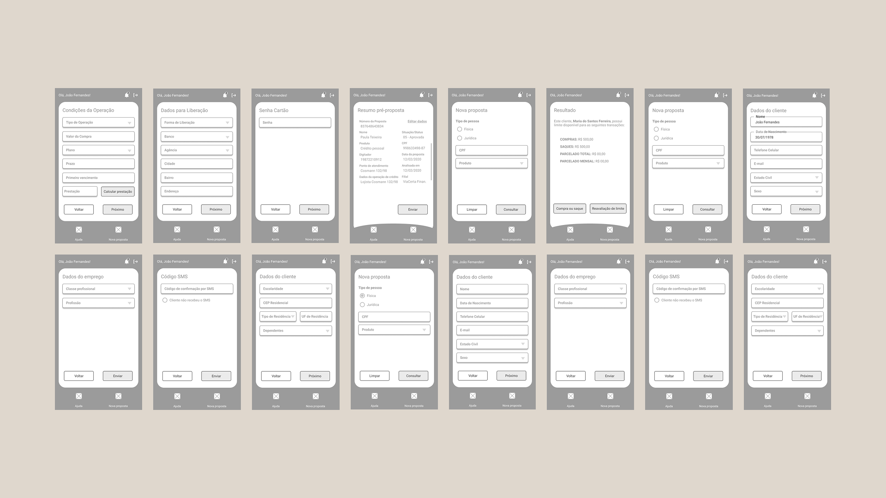
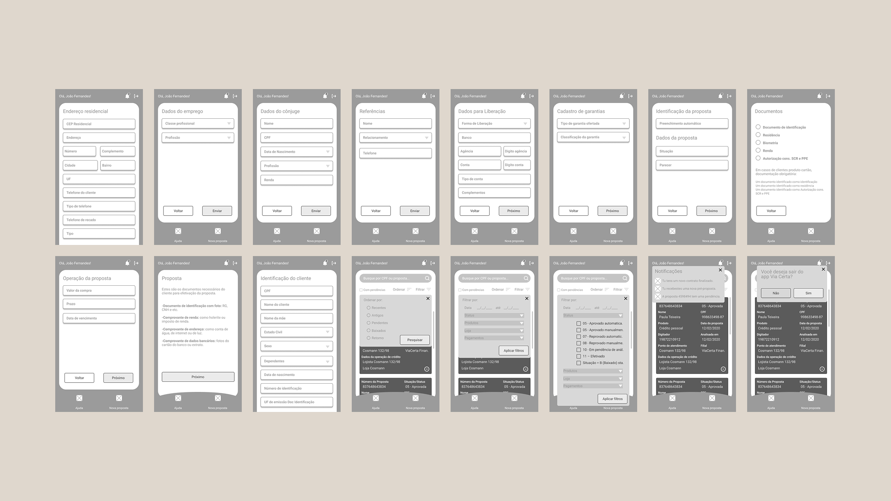
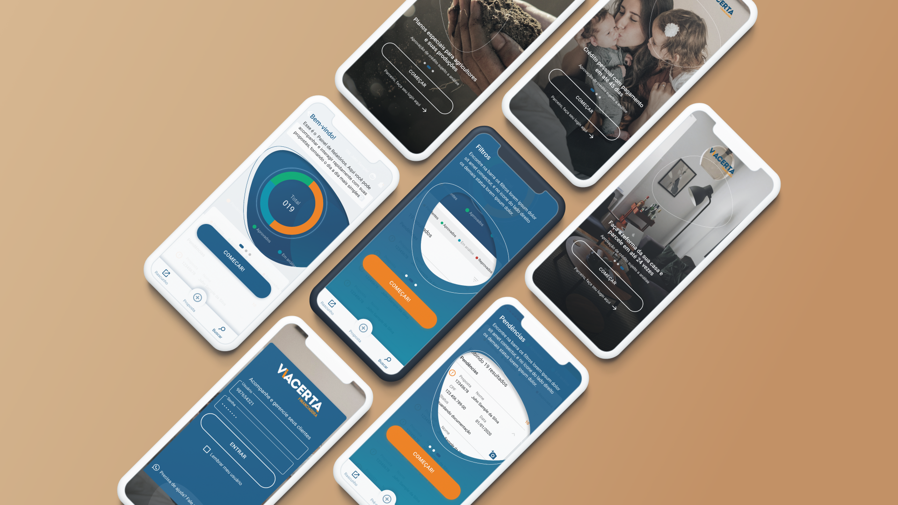
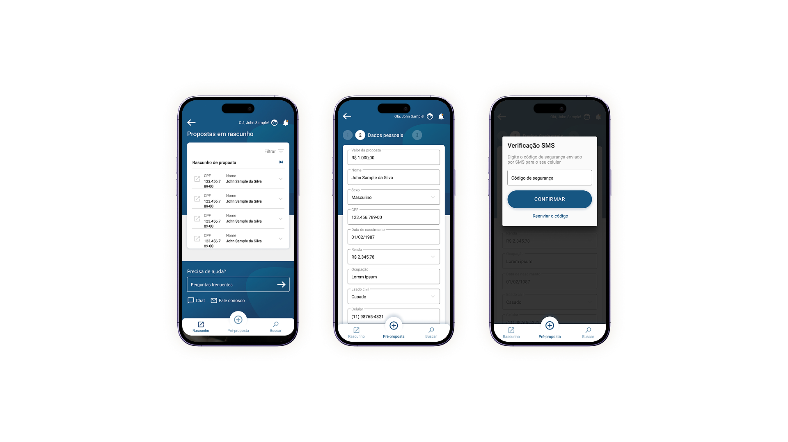
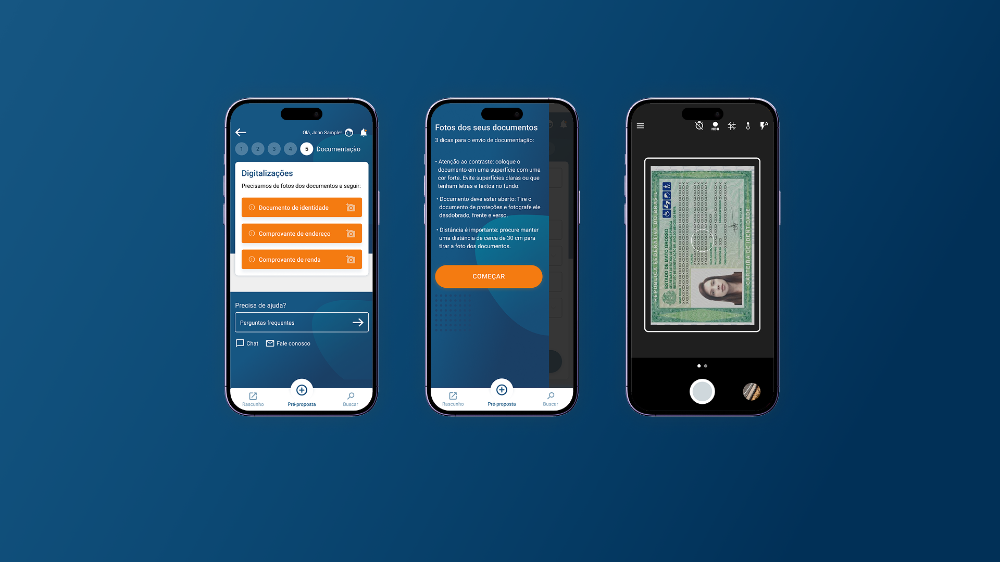
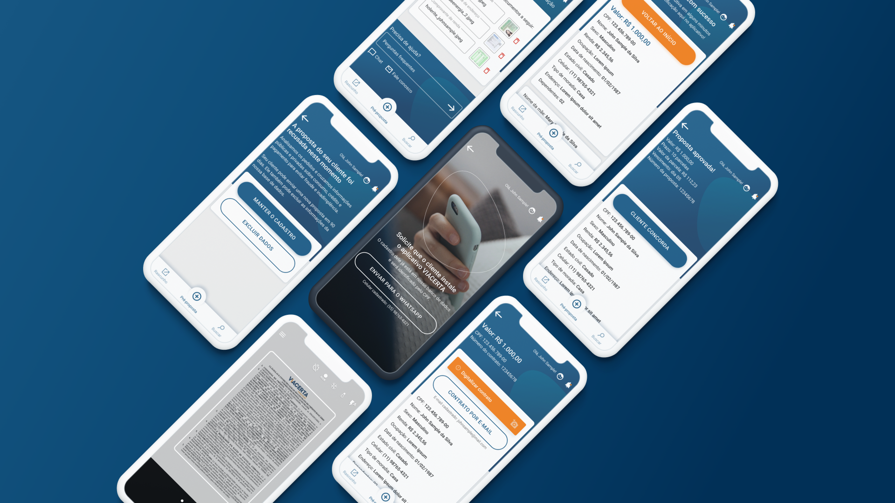

O projeto teve início com uma fase de deep dive. Eu e outro profissional de UX viajamos para Santo Angelo - RS, afim de compreender a fundo o contexto da ViaCerta, uma empresa financeira que atua com crédito pessoal e crédito agro. O objetivo foi mapear comportamentos, processos e necessidades tanto de clientes finais quanto de parceiros, criando uma base sólida para a redefinição da experiência e dos fluxos do produto.
A primeira etapa foi a definição das personas, representando os principais perfis de clientes e parceiros envolvidos no processo de concessão de crédito. Essas personas ajudaram a alinhar o time em torno de objetivos, dores, expectativas e níveis de familiaridade com canais digitais e atendimento humano.
Em seguida, conduzimos uma sessão de Crazy 8, estimulando a geração rápida de ideias e hipóteses de solução. Essa dinâmica foi essencial para explorar diferentes abordagens, identificar oportunidades e envolver os stakeholders de forma colaborativa no processo criativo.
Com os insights coletados, mapeei o fluxo legado, considerando os canais atualmente utilizados pela empresa: telefone ativo, telefone receptivo e atendimento presencial. Esse mapeamento evidenciou gargalos operacionais, redundâncias, dependência excessiva de atendimento humano e pontos de fricção ao longo da jornada de solicitação e acompanhamento do crédito.
A partir disso, estruturei o levantamento de funcionalidades, separando necessidades de parceiros e de clientes. Essa etapa permitiu priorizar recursos com maior impacto no negócio, melhorar a comunicação entre as partes e reduzir esforços manuais, respeitando as particularidades do crédito pessoal e do crédito agro.
Por fim, desenhei o novo fluxo, consolidando aprendizados do deep dive em uma experiência mais clara, eficiente e escalável. O novo modelo equilibra automação e atendimento humano, reduz atritos, melhora a previsibilidade do processo e prepara a plataforma para evolução contínua dos produtos financeiros.
Com o novo fluxo definido a partir do deep dive, avancei para a etapa de prototipação em baixa fidelidade, transformando a jornada redesenhada em telas funcionais. O foco desse momento foi estruturar a experiência, validar fluxos e hierarquia de informação antes de qualquer decisão visual mais refinada.
Esse trabalho foi demandado pelo time de pré-vendas, com o objetivo de materializar rapidamente a solução e apoiar apresentações, alinhamentos comerciais e discussões estratégicas com clientes e parceiros.
Considerando o contexto e os objetivos do projeto, a entrega foi planejada com um escopo enxuto, composto por uma quantidade limitada de telas. Essa abordagem permitiu representar os principais pontos do fluxo, comunicar claramente o funcionamento do produto e viabilizar feedbacks rápidos, mantendo agilidade e eficiência no processo.
A prototipação em baixa fidelidade serviu como ponte entre estratégia e interface, garantindo clareza conceitual e alinhamento entre times antes do avanço para etapas posteriores do design.


Com o MVP definido a partir da fase de discovery, iniciamos a etapa de UX/UI com foco em transformar estratégia em interface. O primeiro passo foi a escolha do framework de frontend, realizada de forma colaborativa e em consenso com a consultoria, considerando critérios como escalabilidade, consistência visual, velocidade de desenvolvimento e facilidade de manutenção.
A partir dessa definição, o trabalho seguiu para o desenho das telas, sempre orientado pelos fluxos do MVP e pelas necessidades reais mapeadas nas jornadas. O processo começou com a estruturação dos principais pontos de entrada do produto, como a landing page para clientes e a landing page para restaurantes, cada uma com objetivos claros, mensagens direcionadas e hierarquia de informação bem definida.
Em seguida, desenhei a área logada do restaurante, entregando a quantidade limitada de telas contratadas, focadas na gestão do dia a dia. O escopo incluiu gestão de cardápio, organização de produtos, preços e disponibilidade, com fluxos pensados para reduzir o atrito operacional e apoiar a tomada de decisão.




{kind=link}
{kind=link}
{kind=link}
{kind=link}
{kind=link}
{kind=link}